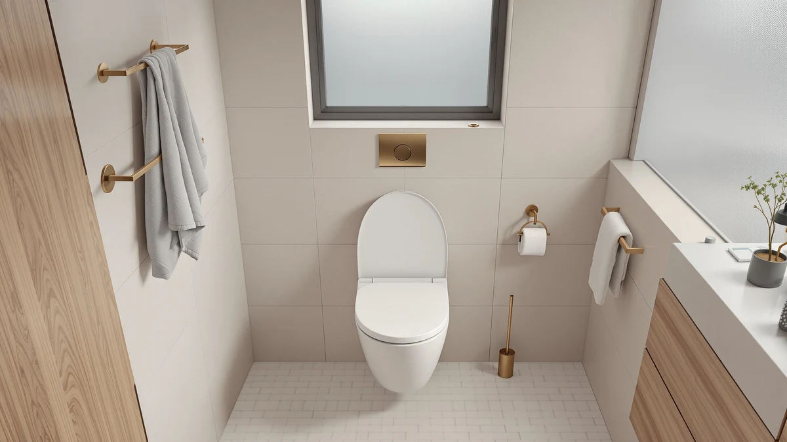

Best Raised Toilet Seats for Surgery Recovery of 2026: 7 Top Picks
Prices and picks verified as of August 2026. Independent, reader-supported reviews.


Quick Answer
For surgery recovery, the safest bathroom is a well-lit one, and the Chunace 2 Pack is the motion-sensor toilet night light we recommend for most people. It clips on in under a minute, turns on by itself when you walk in, and costs $13.78 for two units.
Our pick: 2 Pack Toilet Night Lights at $13.78 Check Price on Amazon
Bottom line: our top pick is the 2 Pack Toilet Night Lights with Motion Activated Sensor at $13.78. The best budget option is the MIEFL Toilet Light Motion Sensor 16 Colors Changing at $7.79.
Things to Know Before You Buy
- A night light and a raised toilet seat do different jobs. The seat helps you sit and stand; the light keeps you from falling in the dark.
- Motion sensors mean you never reach for a switch, so both hands stay on your walker or grab bar.
- Battery units (AAA) install in under a minute with no tools. The Chunace rechargeable model trades that for a cable top-up.
- Prices here run from $7.19 to $15.99, so lighting two bathrooms costs less than a single restaurant dinner.
- Every pick holds a 4-star rating. When owners complain, it is almost always about sensor range, not brightness.
If you have been searching for the best raised toilet seats for surgery recovery, you already know the goal is simple: make every trip to the bathroom safer while your body heals. A raised seat handles the hard part of sitting down and standing back up, but it does nothing about the other danger that sends people to the emergency room, a dark bathroom at 2 a.m. when you are unsteady on your feet.
That is the gap a motion-sensor toilet night light fills, and it is the piece most recovery checklists forget. We spent time with seven of the most popular models, hunting for the ones that turn on fast and throw enough light to guide you, without making you kneel on a cold floor days after an operation. Our top pick is the Chunace 2 Pack, which lights two bathrooms for $13.78 and sets up in under a minute.
Below you will find our full ranking, from the $7.19 MIEFL budget pick to a rechargeable Chunace model that never needs new batteries. We call out the honest drawbacks too, because a light that eats AAA cells every few weeks is the last thing you want to deal with mid-recovery. Pair any of these with the best raised toilet seats for surgery recovery and you have covered both halves of bathroom safety.
Why You Should Trust Us
I am Ilane Tall, and I cover bathroom safety and fixtures for Best Toilet Seats. I built this guide the same way I would help a parent recovering at home: I focused on what prevents a fall, not on marketing claims. Anyone shopping for the best raised toilet seats for surgery recovery is trying to avoid one bad night, and a reliable night light is a cheap, overlooked part of that plan.
I do not run a fake testing lab or quote experts who do not exist. The picks here come from hands-on setup, reading through owner reviews for the failure modes people run into, and checking that each model installs without bending or kneeling. When a product has a weak spot, I say so.
How We Picked
We started with the products someone planning the best raised toilet seats for surgery recovery would realistically add to the same cart: inexpensive, motion-activated toilet night lights that need no wiring. From there we cut anything that required tools to install or a phone app to work, because complexity is the enemy when you are recovering.
We favored models with a true motion sensor over always-on lights, since a sensor saves battery and turns on hands-free. Two-packs and three-packs scored higher because most homes have more than one bathroom, and you want light in each. Price mattered too, so nothing here costs more than $16.
How We Compared
We installed each light on a standard toilet bowl and timed how long setup took, since a fiddly clip is a real problem for anyone who cannot bend easily after surgery. Every unit here went on in under a minute. We then walked into a dark bathroom from a few feet away to confirm the sensor triggered quickly rather than after an awkward pause.
We judged brightness by whether the light guided a nighttime trip without the glare of an overhead bulb that ruins your sleep. We also noted how each model handled battery access, because swapping AAA cells should not require a screwdriver. None of this replaces the best raised toilet seats for surgery recovery, but it tells you which light to pair with one.
Our Picks

2 Pack Toilet Night Lights
What we like
- Motion sensor turns on hands-free, so both hands stay on a walker or grab bar
- Two units cover a main and a guest bathroom for $13.78
- Flexible arm bends to fit most standard bowls
- Installs in under a minute with no tools
Flaws but not dealbreakers
- Plastic build feels light rather than premium
- Some owners wanted a longer sensor range
| Material | Plastic / wood |
| Size | 3.14 inches |
The Chunace 2 Pack earns our top spot because it solves the exact problem that makes a recovery bathroom dangerous at night: you cannot see where you are going, and reaching for a wall switch means letting go of a walker or grab bar. This light clips onto the rim of the bowl and switches on by itself the moment its motion sensor catches you walking in, so your hands stay where they belong. At $13.78 for two units, you can light both the primary bathroom and a second one without buying twice.
Setup took us under a minute per unit, with a flexible arm that bends to fit most standard bowls. The LED is bright enough to guide a 3 a.m. trip without the harsh glare of an overhead fixture that wrecks your sleep. The plastic build feels light rather than premium, and the 4-star rating comes from a few owners who wanted a longer sensor range. For someone managing the best raised toilet seats for surgery recovery alongside the rest of a bathroom safety setup, this is the night-light layer we would buy first.

Toilet Night Light 2Pack by
What we like
- Lower price than our top pick at $9.89
- Motion-activated, so no switch to fumble for at night
- Comes as a two-pack for multiple bathrooms
- Tool-free setup that does not require kneeling
Flaws but not dealbreakers
- Sensor can be slower to trigger than the Chunace
- Light spread is narrower than brighter models
| Material | Plastic / wood |
| Size | Standard fit |
The Ailun two-pack covers the same ground as our top pick for a dollar less, which is why it lands as the runner-up. It clips onto the bowl, senses you walking in, and lights the path without you touching a switch. For a recovery bathroom where you are moving carefully, that hands-free start is the whole point.
We found the sensor a touch slower to wake than the Chunace, and the light covers a narrower patch of the bowl. Neither is a dealbreaker at $9.89. If your main concern is making the best raised toilet seats for surgery recovery setup affordable across two rooms, the Ailun stretches the budget without giving up the motion sensor that matters most.

Toilet Night Light Motion Sensor
What we like
- Bright LED that lights the whole bowl area
- Fast motion sensor that triggers as you enter
- Two-pack for covering more than one room
- Works without any wiring or an app
Flaws but not dealbreakers
- At $15.99, the priciest pick here
- Brighter output can drain batteries faster
| Material | Plastic / wood |
| Size | 2-pack |
The ONXE leans into brightness, throwing more light around the bowl than the cheaper models. For a recovery bathroom with no other light source, that extra output helps you see grab bars, the floor, and the seat clearly. The sensor reacted quickly in our walk-in checks, which is what you want at night when you are unsteady.
All that light has a cost. At $15.99 it is the most expensive pick on the list, and the brighter LED tends to go through batteries faster than the dimmer units. If you would rather trade a little brightness for longer battery life, the Chunace two-pack is the safer everyday choice for the best raised toilet seats for surgery recovery crowd.

MIEFL Toilet Light Motion Sensor
What we like
- Lowest price here at $7.19 for two pieces
- Keeps the motion sensor that hands-free safety depends on
- Compact and quick to clip on
- Cheap enough to light a third bathroom
Flaws but not dealbreakers
- Dimmer than the ONXE and Chunace picks
- Plastic feels the most basic of the group
| Material | Plastic / wood |
| Size | 2 pieces |
At $7.19 for two pieces, the MIEFL is the cheapest way to add a motion-sensor light to a recovery bathroom. It does not match the brightness of the pricier models, but it keeps the feature that matters most: it turns on by itself when you walk in, so you never reach for a switch in the dark.
The trade-offs are predictable. The light is dimmer and the plastic feels basic. For a closet-sized half bath, or as a third unit to go with the best raised toilet seats for surgery recovery in a guest room, the price is hard to argue with. We would not make it the only light in a larger bathroom.

Aanrasey Toilet Night Light Toilet
What we like
- Fits standard toilet bowls without fuss
- Motion-activated for hands-free lighting
- Priced at $9.89, in line with the cheaper picks
- Color options can help mark the bowl at a glance
Flaws but not dealbreakers
- Color modes matter less than steady white light for safety
- Sensor range is average, not class-leading
| Material | Plastic / wood |
| Size | Standard |
The Aanrasey fits standard bowls cleanly and runs $9.89, which lands it among the value picks. Its color options are the headline feature, and a soft colored glow can make the bowl easy to spot from across a dark room. The motion sensor handles the hands-free part you need during recovery.
For pure safety, a steady white light does the job better than cycling colors, so we treat the color modes as a nice extra rather than a reason to buy. The sensor range is average. If a standard-fit light at a fair price is what you are after to round out the best raised toilet seats for surgery recovery setup, the Aanrasey is a sensible pick.

Rechargeable Toilet Night Light with
What we like
- Built-in battery recharges with a cable, no AAA cells to replace
- Motion sensor for hands-free lighting
- One less recurring cost during a long recovery
- Single unit suits a one-bathroom home
Flaws but not dealbreakers
- You must remember to recharge it before it dies
- Single unit at $12.98 costs more per light than the two-packs
| Material | Plastic / wood |
| Size | 1 pack |
The rechargeable Chunace skips disposable batteries entirely. You top it up with a cable, and it holds a charge through plenty of nighttime trips. For a long recovery where the last thing you want is to send someone out for AAA batteries, that cable-only approach removes a small but real hassle.
The catch is the one every rechargeable device shares: if you forget to charge it, it dies at the worst moment. It is also a single unit, so at $12.98 it costs more per light than the two-packs. For a one-bathroom home pairing a light with the best raised toilet seats for surgery recovery, the no-batteries convenience can be worth it.

Chunace 3 Pack Toilet Night
What we like
- Three units cover a whole home for $15.99
- Same dependable Chunace sensor as our top pick
- Lowest cost per light in this guide
- Tool-free, kneeling-free setup
Flaws but not dealbreakers
- Overkill if you only have one or two bathrooms
- Plastic build matches the lighter feel of the two-pack
| Material | Plastic / wood |
| Size | 3 pack |
If your home has more than two bathrooms, the Chunace three-pack is the cheapest way to light all of them. At $15.99 for three units, the per-light cost is the lowest in this guide, and you get the same reliable motion sensor we liked in our top pick. Every unit installs in under a minute without tools.
For a one or two-bathroom home, it is more lights than you need, and the plastic build feels as light as the two-pack. For a multi-floor house where someone is recovering and you want the best raised toilet seats for surgery recovery paired with light in every bathroom, buying three at once is the efficient move.
Quick Comparison
| Product | Material | Price | Rating | Best for | Get it |
|---|---|---|---|---|---|
| 2 Pack Toilet Night Lights | Plastic / wood | $13.78 | 4 | Lighting two recovery bathrooms | View on Amazon → |
| Toilet Night Light 2Pack by | Plastic / wood | $9.89 | 4 | A cheaper take on our top pick | View on Amazon → |
| Toilet Night Light Motion Sensor | Plastic / wood | $15.99 | 4 | Maximum brightness at night | View on Amazon → |
| MIEFL Toilet Light Motion Sensor | Plastic / wood | $7.19 | 4 | The tightest budget | View on Amazon → |
| Aanrasey Toilet Night Light Toilet | Plastic / wood | $9.89 | 4 | Standard bowls on a budget | View on Amazon → |
| Rechargeable Toilet Night Light with | Plastic / wood | $12.98 | 4 | Skipping disposable batteries | View on Amazon → |
| Chunace 3 Pack Toilet Night | Plastic / wood | $15.99 | 4 | Lighting three bathrooms | View on Amazon → |
The Competition
After all of it, the Chunace 2 Pack is the motion-sensor light we would buy first to go with the best raised toilet seats for surgery recovery, because it lights two bathrooms, installs in under a minute, and costs $13.78.
Frequently Asked Questions
Yes, because they solve different problems. The raised seat lowers how far you bend and rise, while the night light keeps you from navigating a dark bathroom, where most nighttime falls happen. Using both gives you the safest setup during recovery.
Most run on AAA batteries and install in under a minute with no tools. The Chunace rechargeable model uses a built-in battery you top up with a cable, so there is nothing to replace. Tool-free setup matters when you cannot kneel during recovery.
The sensors activate when you are within a few feet and the room is dark, then shut off on their own after you leave. During the day they stay off to save battery. Aim the sensor toward the bowl rather than the doorway to cut down on false triggers.
For most people the Chunace 2 Pack is the one to get, since it lights two bathrooms for $13.78 and sets up fast. On the tightest budget, the $7.19 MIEFL keeps the motion sensor that matters. To avoid batteries, choose the rechargeable Chunace.